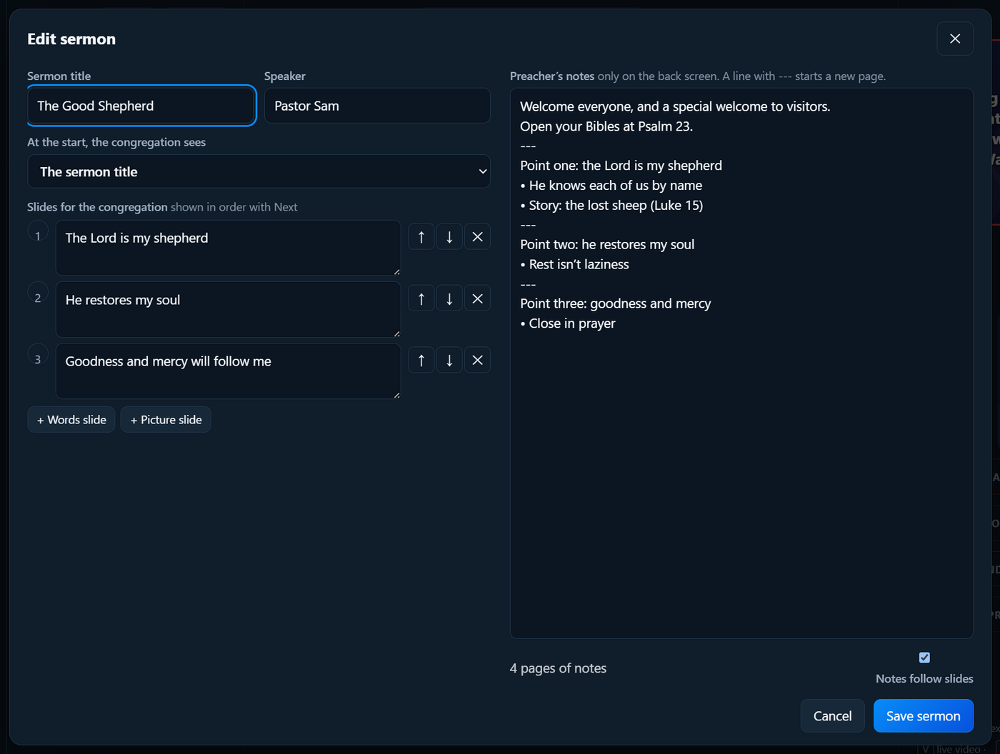
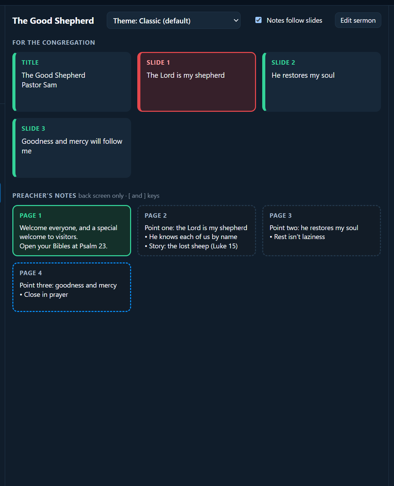
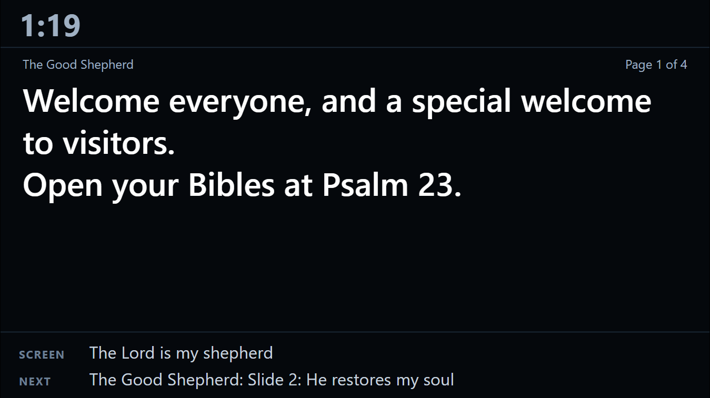
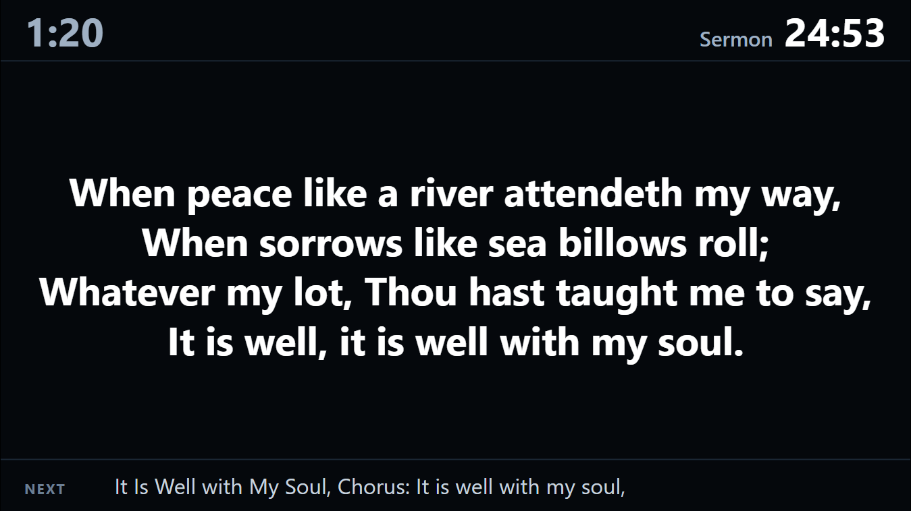
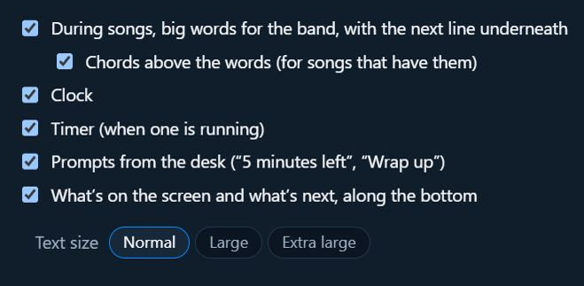

Running a service
Sermons and the preacher’s screen
A sermon has two parts, moved on separately:
- Slides for the congregation on the front screen: the title, points, pictures.
- The preacher’s notes, only on the preacher’s screen (usually a TV at the back, where the preacher can see it).
Adding a sermon
Click + Sermon at the top of the Service column.

- Title and Speaker.
- What the congregation sees first: the church logo, the sermon title, or a sermon picture.
- Slides: add words (points, verses) and pictures (from the Media tab). They’re shown in order with Next.
- Notes: the preacher’s notes, only on the back screen. A line with just
---starts a new page.
Click Save. To change it later, select the sermon and click Edit sermon above its slides.
During the sermon

- Next moves the congregation’s slides.
- Notes ▶ and ◀ Notes (or the ] and [ keys) move the preacher’s notes, separately.
- Tick Notes follow slides if the preacher wants each slide to bring its own notes page (slide 1 with page 1, and so on).
- Hide notes puts the back screen back to showing the slides.
The preacher’s screen

It shows, from top to bottom:
- the clock and the timer (see Timers and prompts)
- any prompt from the desk, like “Wrap up”, big and bright
- the notes page, with “Page 1 of 4”
- what’s on screen now for the congregation, and what’s next
Words for the band
The same screen is the band’s words during songs. When a song is on screen, the words fill the preacher’s screen, big and bold, with the next line along the bottom, so the worship leader and band can sing without turning round.

The sermon notes come back when you go back to the sermon.
If a song has chords, they show above the words (in yellow), each over the right syllable:

Choosing what it shows
In Screens…, under Preacher screen, tick what you want:

- During songs, big words for the band, with the next line underneath
- Chords above the words (for songs that have them; see chords)
- Clock
- Timer (when one is running)
- Prompts from the desk
- What’s on the screen and what’s next, along the bottom
And the Text size: Normal, Large or Extra large (good for a screen far away, or for older eyes). The preacher’s screen changes as you tick, so you can see the difference.
These choices go in the church setup with everything else.
To set up the preacher’s screen, see Screens. There’s also a preacher’s phone remote, so the preacher can move their own slides and notes.